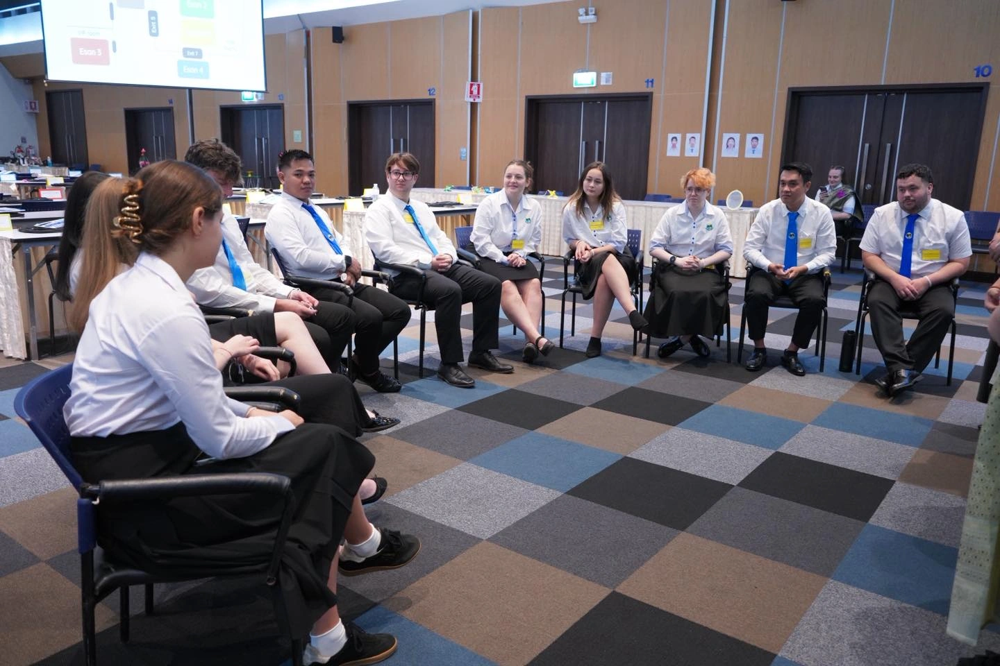

Thinking about teaching in Thailand but worried about what you've heard from friends, online forums, or that one person who "knew someone who taught there"? You're not alone. Teaching abroad comes with its fair share of myths and misconceptions.
The truth is, teaching in Thailand is one of the most rewarding experiences you can have—if you know what to expect. So let's clear the air and debunk the top 10 myths that might be holding you back from the adventure of a lifetime.
Myth #1: "You need years of teaching experience."
This is perhaps the most common misconception. Many prospective teachers believe they need 5+ years of classroom experience before they can even consider teaching abroad.
The Reality: Many teachers in Thailand are complete beginners—fresh graduates, career changers, and first-time educators. MediaKids provides comprehensive orientation, ready-to-use lesson plans, ongoing training, and dedicated support so first-time teachers can start confidently from day one.
Myth #2: "You must speak Thai to teach here."
"Sawadee krap" is about all the Thai you know, and you're worried that won't cut it. Will you be lost in translation?
The Reality: English is the classroom language—that's literally your job! Thai staff and students understand basic English, and our Thai coordinators help you navigate daily life. No Thai is required to teach or live comfortably. That said, learning a few phrases is fun and will make you even more popular with your students!

Myth #3: "You'll be placed anywhere with no input."
The fear of being shipped off to a random location with no say in the matter is understandable. Nobody wants to feel like they have zero control over their placement.
The Reality: You can absolutely share your preferences. While placements ultimately depend on school availability and needs, MediaKids always considers your preferred region (Central, Esan) and environment (city, town, or countryside). We work hard to match you with a placement you'll love.
Myth #4: "Life in Thailand is expensive."
Coming from Western countries where rent alone can eat half your paycheck, it's natural to worry about finances abroad.
The Reality: Thailand has a remarkably low cost of living. A delicious street food meal costs 40-60 baht (about $1.50). Rent for a comfortable apartment can be as low as 5,000-8,000 baht ($150-250) per month. Most teachers enjoy a very comfortable lifestyle and still manage to save money each month—something that feels impossible back home!

Myth #5: "You'll be alone without support."
The thought of being 8,000 miles from home with no support network can be daunting. What if something goes wrong?
The Reality: You're supported every single step of the way. MediaKids provides a dedicated Thai coordinator who's always just a phone call away, academic consultants for curriculum guidance, visa assistance, and a large community of fellow teachers. You'll never feel alone—in fact, many teachers describe it as having a second family.
Myth #6: "Finding housing is stressful."
Apartment hunting is stressful enough in your own country. Doing it in a foreign country where you don't speak the language? That sounds like a nightmare.
The Reality: We take care of this for you. MediaKids provides a housing allowance and helps secure accommodation near your school before you even arrive in Thailand. You'll land knowing exactly where you'll be living—often walking distance from your school.
Myth #7: "You need a teaching degree."
Many people assume that only certified teachers with education degrees can teach abroad. This stops countless qualified individuals from even applying.
The Reality: A bachelor's degree in any field is accepted. Business, psychology, engineering, art history—it doesn't matter. A TEFL certification is helpful but not mandatory. Many of our most successful teachers come from completely non-teaching backgrounds and bring unique perspectives to the classroom.
Myth #8: "Thai students are difficult to teach."
Horror stories about unruly classrooms and disrespectful students can make anyone nervous about teaching abroad.
The Reality: Thai students are known worldwide for being respectful, friendly, and enthusiastic learners. Thai culture emphasizes respect for teachers ("Khru" in Thai is a highly honored title). Students respond wonderfully to interactive, fun lessons and will genuinely try to participate even if they're shy at first.

Myth #9: "Teaching abroad isn't safe."
Safety concerns are completely valid—especially when considering moving to a country you've never visited before.
The Reality: Thailand is consistently ranked as one of the friendliest and safest countries for expats. Thai people are genuinely welcoming to foreigners, communities are tight-knit and look out for each other, and violent crime is rare—especially in the areas where teachers typically live and work. Plus, MediaKids supports you through every step.
Myth #10: "You won't have time to travel."
What's the point of living in Thailand if you can't explore it? Will you be chained to a desk grading papers every weekend?
The Reality: You work Monday through Friday with weekends completely free. Plus, Thailand has generous school holidays throughout the year. Teachers explore regularly—beaches in the south, mountains in the north, night markets everywhere, ancient temples, island hopping, and incredible food adventures. Thailand becomes your playground.
The Bottom Line
Don't let myths and misconceptions hold you back from an incredible life-changing experience. Teaching in Thailand offers the perfect blend of meaningful work, adventure, cultural immersion, and personal growth—all while being supported every step of the way.
The teachers who take the leap consistently describe it as one of the best decisions they've ever made. The question isn't "Can I do this?"—it's "When do I start?"
Ready to Start Your Adventure?
Join hundreds of teachers who are living their dream in Thailand.
Apply Now